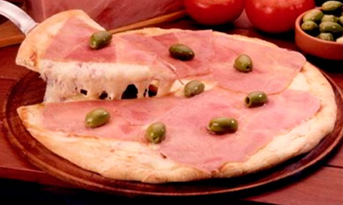
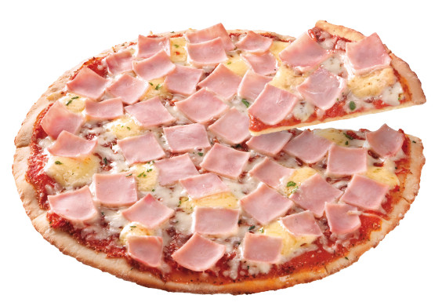
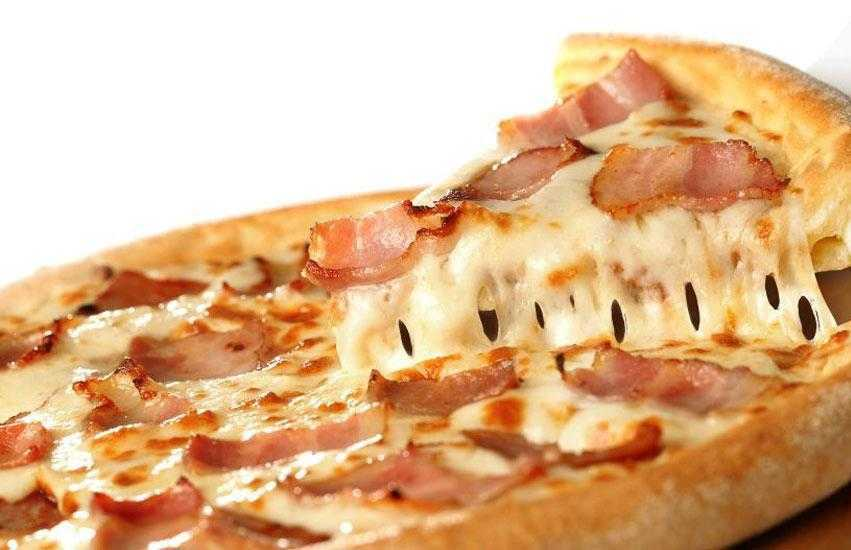

Pizza con Jamon
Pizza es la comida preferida de todo integrante de la familia. Compratimos la receta para preparar una rica pizza con jamon a la piedra.
También tenemos que insistir en que todo lo que le suceda como resultado de consumir la pizza es su responsabilidad. Usted ha sido advertido y puede ver nuestra página legal para obtener más información.
Ingredientes: (2 pizzas)
- Harina, 1 paquete premezcla (500g)
- Queso Cremoso, 500-600g
- Jamon Cocido, 200-300g
- Salsa de Tomate, 200g
- Oregano seco
- Aceite de oliva
- Sal y Pimienta
- Agua, 300ml
Preparación:
- Prepará la masa como indica el envase y dividila en dos.
- Estirá los dos bollos, aceita las bandejas para pizza y coloca la masa estirada. Agrega la salsa de tomate que cubra toda la superficie.
- Cociná en horno a 180º hasta que se cocine bien la masa.
- Coloca las fetas de jamon y agrega queso cremoso en trozos sobre la superficie
- Cociná en horno a 180º hasta que se derrita el queso.
- A disfrutar!
Fotos:
- 
- 
- 